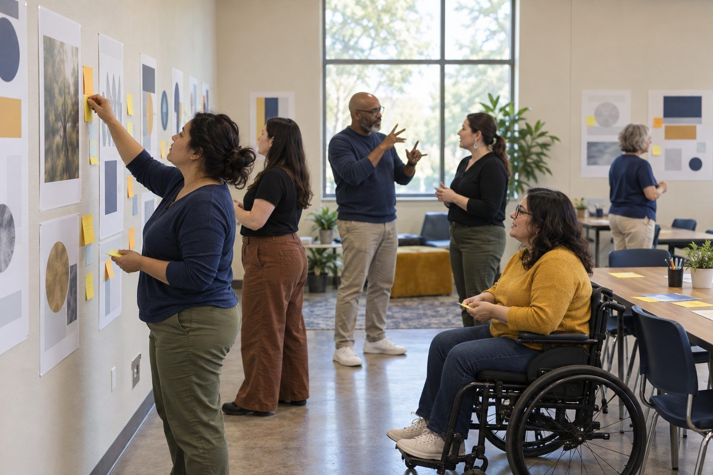

Bồi dưỡng chuyên môn · Chuyên viên hỗ trợ, Thủ thư · 90 phút
Dạy Thử Giữa Các Chuyên Viên Hỗ Trợ
Các chuyên viên hỗ trợ giảng dạy lên kế hoạch và thực hiện những buổi bồi dưỡng chuyên môn ngắn 10 phút (micro-PD) về một kỹ năng hiểu biết kỹ thuật số, nhận góp ý đồng nghiệp theo quy trình, và chỉnh sửa trước khi bất kỳ giáo viên nào được xem.
Các chuyên viên hỗ trợ giảng dạy thường được đề nghị dạy một kỹ năng cho người lớn trong mười phút đầu cuộc họp giáo viên, và mười phút đó hiếm khi được tập dượt. Trong buổi này, mỗi chuyên viên hỗ trợ bốc một kỹ năng hiểu biết kỹ thuật số (truy nguồn một câu trích dẫn, kiểm tra nguồn trong câu trả lời của AI, dừng lại nghĩ về quyền riêng tư trước khi tải lên), lên kế hoạch một buổi micro-PD 10 phút có mục tiêu RISE và lồng ghép các nguyên tắc học tập của người lớn, trình bày cho hai đồng nghiệp, và nhận góp ý qua quy trình có cấu trúc gồm điểm sáng (glow), điểm cần phát triển (grow) và gợi ý thử (try). Các chuyên viên hỗ trợ cũng kiểm tra một bộ mẫu câu góp ý do AI soạn nháp và quyết định giữ lại điều gì. Trước khi ra về, mọi người chỉnh sửa và trình bày lại hai phút yếu nhất.
Trong bộ tài liệu này
- Phiếu A: Thẻ Kỹ Năng và Mẫu Câu Do AI Soạn Nháp (thẻ cắt rời)
- Phiếu B: Kế Hoạch Micro-PD (phiếu bài tập)
- Phiếu C: Bảng Tiêu Chí Góp Ý Micro-PD (bảng tiêu chí)
- Đáp án cho người điều phối (trang cuối)
Chỉ báo ELE của TCEA
- C4.1 Tôi biết cách thiết kế và thực hiện các buổi bồi dưỡng chuyên môn hiệu quả.
- C4.3 Tôi nhận thức được các nguyên tắc học tập của người lớn và cách áp dụng chúng.
- C5.3 Tôi nhận thức được các chiến lược xây dựng lòng tin và thúc đẩy tinh thần làm việc nhóm.
- C1.2 Tôi có thể đưa ra phản hồi mang tính xây dựng để cải thiện chiến lược giảng dạy.
- AI4.2 Tôi có thể dạy người khác đặt câu hỏi và kiểm chứng kết quả do AI tạo ra.
Hướng dẫn đầy đủ cho người điều phối: mglearn.github.io/eles/vi/activities/coach-to-coach-microteaching.html
Phiếu A cho Dạy Thử Giữa Các Chuyên Viên Hỗ Trợ
Thẻ Kỹ Năng và Mẫu Câu Do AI Soạn Nháp
Cắt rời. Mỗi chuyên viên hỗ trợ bốc một thẻ Kỹ Năng. Hai thẻ Mẫu Câu Do AI Soạn Nháp dành cho cả nhóm ba người. Mặt sau là ý chính và quan niệm sai phổ biến.
Tờ 1/2
Kỹ năng · Truy nguồn câu trích dẫn
Trước khi chia sẻ một câu trích dẫn từ bài đăng, hãy tìm nơi người đó thực sự đã nói câu ấy và đọc những câu xung quanh.
Kỹ năng · Kiểm tra nguồn của AI
Khi chatbot trích dẫn một nguồn, hãy mở nó ra. Nguồn đó có tồn tại không? Nó có nói đúng như chatbot khẳng định không?
Kỹ năng · Ai đứng sau trang web này?
Rời khỏi trang và tìm tên tổ chức để biết ai điều hành và tài trợ cho nó trước khi tin các nhận định của nó.
Kỹ năng · Tìm hình ảnh gốc
Dùng tìm kiếm hình ảnh ngược, hoặc tìm bài đăng sớm nhất, để xem một bức ảnh xuất hiện lần đầu ở đâu và khi nào.
Kỹ năng · Kiểm tra ngày tháng
Trước khi phản ứng với một tin tức, hãy xem nó được đăng khi nào và có đang bị lan truyền lại như tin mới hay không.
Kỹ năng · Dừng lại nghĩ về quyền riêng tư
Trước khi tải bất cứ thứ gì lên một ứng dụng hay công cụ AI, hãy hỏi: trong này có thông tin của ai, và nó sẽ đi đâu?
Kỹ năng · Công khai sự trợ giúp của AI
Thêm một ghi chú ngắn vào bài làm có AI trợ giúp: công cụ nào, nó đã làm gì, bạn đã thay đổi và kiểm tra điều gì.
Kỹ năng · Gọi tên thủ thuật thuyết phục
Trước khi chia sẻ, hãy gọi tên thủ thuật mà bài đăng đang dùng: sự gấp gáp, nỗi sợ, lời tâng bốc, hiệu ứng đám đông, hoặc một cảm xúc mạnh.
Phiếu A cho Dạy Thử Giữa Các Chuyên Viên Hỗ Trợ
Thẻ Kỹ Năng và Mẫu Câu Do AI Soạn Nháp
Cắt rời. Mỗi chuyên viên hỗ trợ bốc một thẻ Kỹ Năng. Hai thẻ Mẫu Câu Do AI Soạn Nháp dành cho cả nhóm ba người. Mặt sau là ý chính và quan niệm sai phổ biến.
Tờ 2/2
Mẫu Câu Do AI Soạn Nháp · Điểm sáng
Kết quả chatbot mô phỏng: "1. Bạn đã làm rất tuyệt vời! 2. Năng lượng của bạn thật tuyệt và rất lôi cuốn. 3. Người tham gia đã thực hành kỹ năng với một ví dụ thật, điều này giúp họ tự tin hơn. 4. Sử dụng công nghệ rất hay!"
Mẫu Câu Do AI Soạn Nháp · Điểm cần phát triển
Kết quả chatbot mô phỏng: "1. Hãy cân nhắc thêm các yếu tố tương tác. 2. Bạn có vẻ lo lắng; hãy rèn thêm sự tự tin. 3. Phần làm mẫu có thể cho thấy cả một lần đi vào ngõ cụt chứ không chỉ thành công, để người tham gia thấy việc kiểm chứng thực sự trông như thế nào. 4. Lần sau, hãy đưa vào một liên kết rõ ràng với những gì học sinh sẽ làm."
Phiếu B cho Dạy Thử Giữa Các Chuyên Viên Hỗ Trợ
Kế Hoạch Micro-PD
Tổng cộng mười phút. Nêu nguyên tắc học tập của người lớn mà mỗi phần tôn trọng: lý do trước nội dung, tận dụng kinh nghiệm, vấn đề thật, quyền lựa chọn, thiết thực ngay lúc này, thực hành có góp ý.
Kỹ năng của tôi và nhóm giáo viên tôi sẽ dạy:
Mục tiêu RISE cho buổi micro-PD này. Relevant (Thiết thực: vì sao là những giáo viên này, vì sao là lúc này) · Impactful (Tác động: điều gì thay đổi cho học sinh) · Specific (Cụ thể: giáo viên sẽ làm được gì) · Energized (Hứng khởi: vì sao họ sẽ muốn thử):
Lý do (1 phút): vấn đề mà giáo viên sẽ nhận ra. Nguyên tắc được tôn trọng:
Làm mẫu (3 phút): phần nghĩ thành tiếng của tôi, bao gồm một lần đi vào ngõ cụt. Ví dụ tôi sẽ dùng:
Thực hành (4 phút): người tham gia làm gì, trên ví dụ nào, và làm sao tôi biết họ đã làm:
Áp dụng (2 phút): giáo viên làm gì với học sinh vào tuần tới và bằng chứng từ học sinh mà họ sẽ mang về:
Chỉnh sửa sau góp ý: phần tôi đã thay đổi, tôi đã thay đổi gì, và góp ý nào đã dẫn đến điều đó:
Phiếu C cho Dạy Thử Giữa Các Chuyên Viên Hỗ Trợ
Bảng Tiêu Chí Góp Ý Micro-PD
Lặng lẽ chấm sau mỗi buổi trình bày. Khoanh một mức cho mỗi hàng và ghi khoảnh khắc thể hiện mức đó ở lề giấy.
| Tiêu chí | Chưa đạt | Đang hình thành | Vững vàng | Sẵn sàng cho giáo viên |
|---|---|---|---|---|
| Lý do trước nội dung | Bắt đầu bằng một định nghĩa hoặc một công cụ. | Nêu một vấn đề, nhưng chung chung. | Mở đầu bằng một vấn đề mà những giáo viên này nhận ra. | Mở đầu bằng một vấn đề mà những giáo viên này nhận ra, và liên kết nó với học sinh của họ trong chưa đầy một phút. |
| Làm mẫu trực tiếp | Mô tả kỹ năng thay vì thực hiện nó. | Thực hiện kỹ năng, nhưng im lặng hoặc quá nhanh để theo kịp. | Nghĩ thành tiếng khi thực hiện kỹ năng trên một ví dụ thật. | Nghĩ thành tiếng, kể cả một lần đi vào ngõ cụt, để việc kiểm chứng trông chân thực. |
| Người tham gia thực hành | Người tham gia chỉ quan sát. | Người tham gia thực hành chưa đến hai phút. | Người tham gia thực hiện kỹ năng trên một ví dụ thật trong khoảng bốn phút. | Người tham gia thực hiện kỹ năng và người trình bày kiểm tra rằng từng người đã làm. |
| Áp dụng cho học sinh | Không nhắc đến học sinh. | Gợi ý rằng học sinh có thể thử vào một lúc nào đó. | Nêu rõ học sinh sẽ làm gì vào tuần tới. | Nêu rõ học sinh sẽ làm gì và bằng chứng từ học sinh mà giáo viên sẽ mang về. |
| Tôn trọng người học là người lớn | Nói với người tham gia bằng giọng kẻ cả hoặc phớt lờ kinh nghiệm của họ. | Ghi nhận kinh nghiệm nhưng không tận dụng. | Mời người tham gia chia sẻ kinh nghiệm hoặc đưa ra lựa chọn ở một thời điểm. | Tận dụng kinh nghiệm của người tham gia và đưa ra một lựa chọn thực sự trong mười phút. |
Chỉ dành cho người điều phối, Dạy Thử Giữa Các Chuyên Viên Hỗ Trợ
Đáp án và ghi chú
Phiếu A: Thẻ Kỹ Năng và Mẫu Câu Do AI Soạn Nháp
- Kỹ năng · Truy nguồn câu trích dẫn
- Vì sao quan trọng: câu trích dẫn thường bị cắt xén đến mức đảo ngược ý nghĩa. Quan niệm sai: "Có gắn tên người nói thì chắc là thật."
- Kỹ năng · Kiểm tra nguồn của AI
- Vì sao quan trọng: chatbot có thể đưa ra những trích dẫn nghe hợp lý nhưng không tồn tại hoặc không ủng hộ nhận định. Quan niệm sai: "Nó đã đưa nguồn, vậy là đã được kiểm chứng."
- Kỹ năng · Ai đứng sau trang web này?
- Vì sao quan trọng: giao diện chuyên nghiệp và địa chỉ .org chẳng nói lên điều gì về thiên kiến. Quan niệm sai: "Tôi sẽ đọc trang Giới thiệu."
- Kỹ năng · Tìm hình ảnh gốc
- Vì sao quan trọng: ảnh thật thường bị chia sẻ lại với bối cảnh sai. Quan niệm sai: "Nhìn là tôi biết ảnh có bị chỉnh sửa hay không."
- Kỹ năng · Kiểm tra ngày tháng
- Vì sao quan trọng: tin cũ thường trồi lên lại như tin nóng. Quan niệm sai: "Nếu hôm nay nó có trên bảng tin của tôi thì nó xảy ra hôm nay."
- Kỹ năng · Dừng lại nghĩ về quyền riêng tư
- Vì sao quan trọng: tên và bài làm của học sinh có thể nằm trong những công cụ lưu giữ hoặc dùng chúng để huấn luyện. Quan niệm sai: "Đây là thiết bị của trường, nên an toàn."
- Kỹ năng · Công khai sự trợ giúp của AI
- Vì sao quan trọng: công khai xây dựng niềm tin và cho thấy suy nghĩ của chính học sinh. Quan niệm sai: "Công khai nghĩa là thừa nhận mình gian lận."
- Kỹ năng · Gọi tên thủ thuật thuyết phục
- Vì sao quan trọng: gọi tên thủ thuật giúp chậm lại trước khi chia sẻ. Quan niệm sai: "Chỉ người khác mới mắc bẫy đó."
- Mẫu Câu Do AI Soạn Nháp · Điểm sáng
- Giữ câu 3 (nó nêu một tiêu chí trong bảng tiêu chí). Sửa câu 2 để dẫn ra một khoảnh khắc cụ thể. Bỏ câu 1 và 4: lời khen chung chung, và câu 4 coi việc dùng công cụ là chất lượng.
- Mẫu Câu Do AI Soạn Nháp · Điểm cần phát triển
- Giữ câu 3 và 4 (cụ thể, gắn với bảng tiêu chí). Sửa câu 1 để nêu rõ phần nào. Bỏ câu 2: nó đánh giá con người, không phải buổi trình bày.